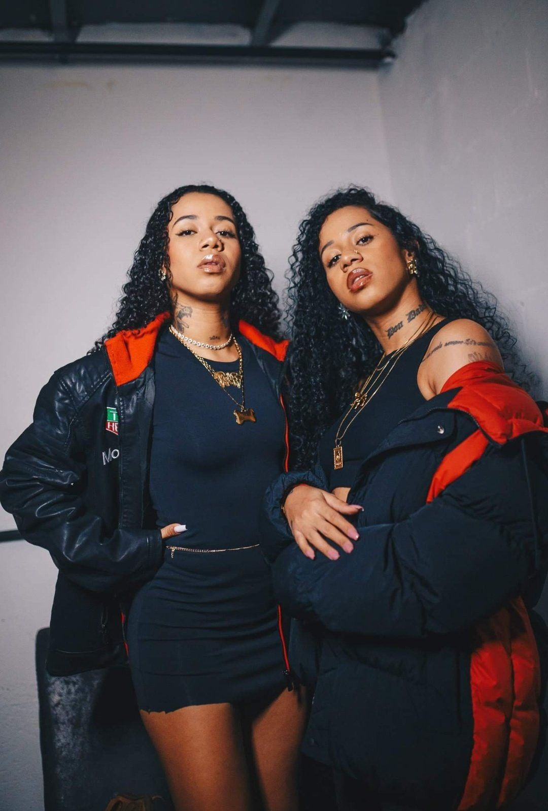
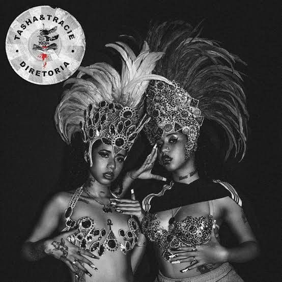
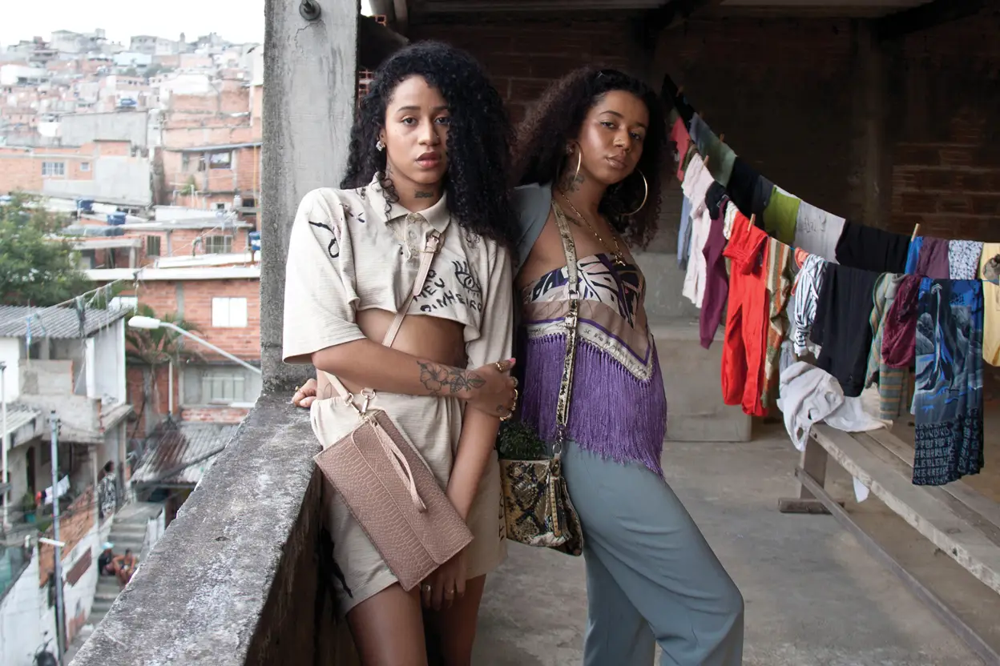
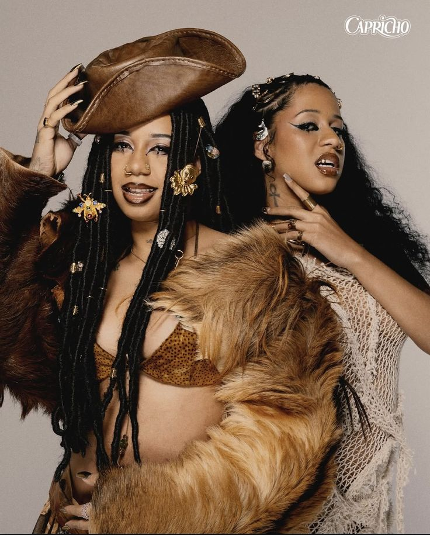

Tasha e Tracie dominando o palco durante uma atuação ao vivo num grande festival, representando a ascensão
do rap feminino da periferia para os maiores palcos do país.
Detalhe da estética visual única da dupla, focada em acessórios dourados, joias e elementos do movimento
"Expensive Shit", unindo o luxo à identidade das ruas.

Arte oficial do projeto musical "Diretoria", um marco na carreira das irmãs que consolidou o seu
som e a sua lírica no cenário do Hip-Hop nacional.

As gémeas Tasha e Tracie no Jardim Peri, bairro de origem em São Paulo, reafirmando a conexão com as suas raízes e a
autenticidade da cultura periférica.

Ensaio fotográfico de moda estilo editorial, mostrando a versatilidade da dupla como ícones de estilo e
referências para as maiores revistas de moda contemporâneas.

Abaixo, apresentamos os dados cronológicos da carreira das irmãs Okereke...
| Trabalho | Ano |
|---|---|
| EP Rouff | 2019 |
| EP Diretoria | 2021 |
| Evento | Local |
|---|---|
| Rock in Rio | Rio de Janeiro |
| Lollapalooza | São Paulo |
© 2026 - Eshley Meneses - Projeto 1º Bimestre